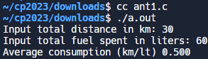
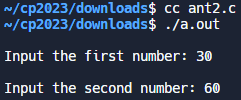
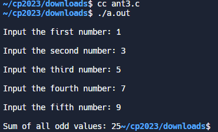
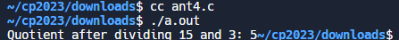
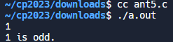
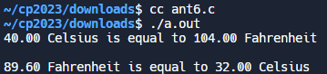
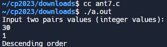
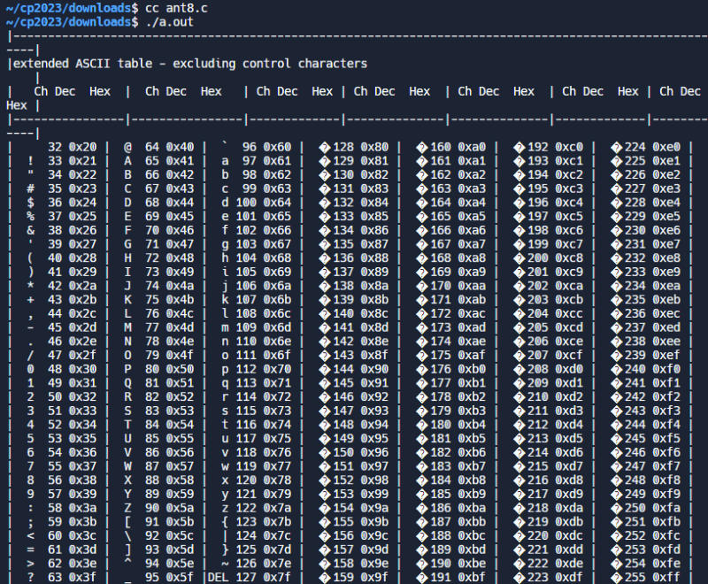
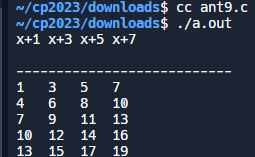
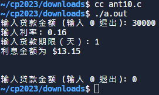

ANSIC <<
Previous Next >> 期末總結
ANSIC_T
1
#include <stdio.h>
int main() {
int x; // 用於存儲總里程的變數，以公里為單位
float y; // 用於存儲總耗油量的變數，以升為單位
// 提示用戶輸入總里程並存入 'x'
printf("Input total distance in km: ");
// 檢查 scanf 的返回值，確保成功讀取一個整數
if (scanf("%d", &x) != 1) {
fprintf(stderr, "Error: Invalid input for total distance.\n");
return 1;
}
// 提示用戶輸入總耗油量並存入 'y'
printf("Input total fuel spent in liters: ");
// 檢查 scanf 的返回值，確保成功讀取一個浮點數
if (scanf("%f", &y) != 1) {
fprintf(stderr, "Error: Invalid input for total fuel spent.\n");
return 1;
}
// 計算並打印平均油耗
printf("Average consumption (km/lt) %.3f ", x / y);
printf("\n");
return 0;
}
解釋：
1. `#include <stdio.h>`：包含標準輸入/輸出庫的 `stdio.h` 標頭文件，提供輸入和輸出的相關函式。
2. `int main()`：定義主函式，返回一個整數。
3. `int x;` 和 `float y;`：宣告一個整數變數 `x` 和一個浮點數變數 `y`，用於分別存儲總里程和總耗油量。
4. `printf("Input total distance in km: ");`：提示用戶輸入總里程。
5. `if (scanf("%d", &x) != 1) {...}`：使用 `scanf` 函式讀取用戶輸入的整數值，存儲在 `x` 中。檢查 `scanf` 的返回值，確保成功讀取一個數字，否則輸出錯誤信息並返回1。
6. 類似地，提示用戶輸入總耗油量，並讀取輸入值到變數 `y` 中。
7. `printf("Average consumption (km/lt) %.3f ", x / y);`：計算並輸出平均油耗，使用公式 `x / y`。`%.3f` 用於限制浮點數的小數點後顯示的位數為三位。
8. `printf("\n");`：輸出換行符，使結果更易讀。
9. `return 0;`：主函式正常結束，返回值為0。

2
#include <stdio.h>
int main() {
float x, y, z, P; // 宣告變數，用於存儲三角形的邊長和周長
// 提示用戶輸入三個邊長並存入 'x', 'y', 和 'z'
printf("\nInput the first number: ");
if (scanf("%f", &x) != 1) {
fprintf(stderr, "Error: Invalid input for the first number.\n");
return 1;
}
printf("\nInput the second number: ");
if (scanf("%f", &y) != 1) {
fprintf(stderr, "Error: Invalid input for the second number.\n");
return 1;
}
printf("\nInput the third number: ");
if (scanf("%f", &z) != 1) {
fprintf(stderr, "Error: Invalid input for the third number.\n");
return 1;
}
if (x < (y + z) && y < (x + z) && z < (y + x)) // 檢查是否可以構成三角形
{
P = x + y + z; // 計算周長
printf("\nPerimeter = %.1f\n", P); // 輸出周長
} else {
printf("Not possible to create a triangle..!"); // 如果無法構成三角形，輸出相應的信息
}
return 0;
}
解釋：
1. `#include <stdio.h>`：包含標準輸入/輸出庫的 `stdio.h` 標頭文件。
2. `int main()`：定義主函式，返回一個整數。
3. `float x, y, z, P;`：宣告四個浮點數變數，`x`、`y` 和 `z` 用於存儲三角形的三個邊長，`P` 用於存儲三角形的周長。
4. 提示用戶輸入第一個數字，並使用 `scanf` 函式讀取輸入值，存儲在變數 `x` 中。檢查 `scanf` 的返回值，確保成功讀取一個浮點數。
5. 類似地，提示用戶輸入第二個和第三個數字，分別存儲在變數 `y` 和 `z` 中。
6. `if (x < (y + z) && y < (x + z) && z < (y + x))`：檢查三個數是否構成一個三角形。這是三角形存在的條件，即每個邊的長度都小於其他兩個邊的長度之和。
7. 如果條件滿足，則計算三角形的周長 `P`，並使用 `printf` 函式輸出周長。
8. 如果條件不滿足，則輸出相應的信息表示無法構成三角形。
9. `return 0;`：主函式正常結束，返回值為0。

3
#include <stdio.h>
int main() {
int j, numbers[5], total = 0; // 宣告數組用於存儲 5 個數字和變數用於總和
// 提示用戶輸入五個數字並存入數組
for (j = 0; j < 5; j++) {
printf("\nInput the %s number: ", j == 0 ? "first" : (j == 1 ? "second" : (j == 2 ? "third" : (j == 3 ? "fourth" : "fifth"))));
if (scanf("%d", &numbers[j]) != 1) {
fprintf(stderr, "Error: Invalid input for the %s number.\n", j == 0 ? "first" : (j == 1 ? "second" : (j == 2 ? "third" : (j == 3 ? "fourth" : "fifth"))));
return 1;
}
}
for (j = 0; j < 5; j++) {
if ((numbers[j] % 2) != 0) // 檢查數字是否為奇數
{
total += numbers[j]; // 將奇數添加到總和中
}
}
printf("\nSum of all odd values: %d", total); // 輸出所有奇數的總和
return 0;
}
解釋：
1. `#include <stdio.h>`：包含標準輸入/輸出庫的 `stdio.h` 標頭文件。
2. `int main()`：定義主函式，返回一個整數。
3. `int j, numbers[5], total = 0;`：宣告一個整數 `j`，一個大小為5的整數數組 `numbers`，和一個用於總和的整數變數 `total`。
4. 使用 `for` 迴圈提示用戶輸入五個數字，並將它們存入 `numbers` 數組。迴圈中的 `printf` 語句根據循環變數 `j` 的值，動態生成提示信息，例如 "first"、"second" 等。同時，使用 `scanf` 函式檢查輸入的有效性。
5. 使用第二個 `for` 迴圈遍歷 `numbers` 數組，檢查每個數字是否為奇數。
6. 如果某個數字是奇數，將其加到 `total` 變數中。
7. `printf("\nSum of all odd values: %d", total);`：輸出所有奇數的總和。
8. `return 0;`：主函式正常結束，返回值為0。

4
#include <stdio.h>
#include <stdlib.h>
#include <limits.h>
int divide_two(int dividend_num, int divisor_num) {
int sign = (float)dividend_num / divisor_num > 0 ? 1 : -1;
unsigned int dvd = dividend_num > 0 ? dividend_num : -dividend_num;
unsigned int dvs = divisor_num > 0 ? divisor_num : -divisor_num;
unsigned int bit_num[33];
unsigned int i = 0;
long long d = dvs;
bit_num[i] = d;
while (d <= dvd) {
bit_num[++i] = d = d << 1;
}
i--;
unsigned int result = 0;
while (dvd >= dvs) {
if (dvd >= bit_num[i]) {
dvd -= bit_num[i];
result += (1 << i);
} else {
i--;
}
}
if (result > INT_MAX && sign > 0) {
return INT_MAX;
}
return (int)result * sign;
}
int main(void) {
int dividend_num = 15;
int divisor_num = 3;
printf("Quotient after dividing %d and %d: %d", dividend_num, divisor_num, divide_two(dividend_num, divisor_num));
return 0;
}
解釋：
1. `#include <stdio.h>`：包含標準輸入/輸出庫的 `stdio.h` 標頭文件。
2. `#include <stdlib.h>`：包含標準庫的 `stdlib.h` 標頭文件，這裡主要用於 `malloc` 和 `free` 函式。
3. `#include <limits.h>`：包含整數型別的限制信息，例如 `INT_MAX`。
4. `int divide_two(int dividend_num, int divisor_num)`：定義了一個自定義函式 `divide_two`，該函式接受兩個整數參數 `dividend_num` 和 `divisor_num`，並返回一個整數。
5. `int sign = (float)dividend_num / divisor_num > 0 ? 1 : -1;`：確定商的正負號。如果 `(float)dividend_num / divisor_num` 大於 0，則 `sign` 為1，否則為-1。
6. `unsigned int dvd = dividend_num > 0 ? dividend_num : -dividend_num;` 和 `unsigned int dvs = divisor_num > 0 ? divisor_num : -divisor_num;`：將被除數和除數轉換為無符號整數，以確保它們的絕對值在之後的操作中不會出現問題。
7. `unsigned int bit_num[33];`：定義一個大小為33的無符號整數數組，用於存儲除數的倍增值。
8. `unsigned int i = 0;`：初始化循環變數 `i`。
9. `long long d = dvs;`：將 `dvs` 複製到 `d`，並使用 `long long` 類型，以防止在位元左移時溢出。
10. `bit_num[i] = d;`：將 `d` 存儲在 `bit_num` 數組的第一個位置。
11. `while (d <= dvd)`：當 `d` 小於或等於被除數時，執行以下操作。
- `bit_num[++i] = d = d << 1;`：將 `d` 左移一位，同時將結果存儲在 `bit_num` 數組的下一個位置。這樣就完成了除數的倍增。
12. `i--;`：將 `i` 減1，回到最後一個有效位置。
13. `unsigned int result = 0;`：初始化 `result` 變數，用於存儲商的結果。
14. `while (dvd >= dvs)`：當被除數大於等於除數時，執行以下操作。
- `if (dvd >= bit_num[i])`：如果被除數大於等於 `bit_num[i]`，則執行以下操作。
- `dvd -= bit_num[i];`：從被除數中減去 `bit_num[i]`。
- `result += (1 << i);`：將 `result` 加上 `2^i`，即將對應位置的二進制位設置為1。
- `else`：如果被除數小於 `bit_num[i]`，則執行以下操作。
- `i--;`：將 `i` 減1，繼續檢查下一個位置。
15. `if (result > INT_MAX && sign > 0)`：如果商的結果大於整數型別的最大值 `INT_MAX`，並且 `sign` 為正，則執行以下操作。
- `return INT_MAX

5
#include <stdio.h>
// inline function to check if a given integer is even
inline int is_even(int n) {
return n % 2 == 0;
}
int main() {
int num;
// 檢查 scanf 的返回值，確保成功讀取一個整數
if (scanf("%d", &num) != 1) {
fprintf(stderr, "Error: Invalid input. Please enter a valid integer.\n");
return 1;
}
if (is_even(num)) {
printf("%d is even.\n", num);
} else {
printf("%d is odd.\n", num);
}
return 0;
}
解釋：
1. `#include <stdio.h>`：包含標準輸入/輸出庫的 `stdio.h` 標頭文件。
2. `inline int is_even(int n)`：定義了一個內聯函式 `is_even`，該函式接受一個整數參數 `n`，並返回一個整數。內聯函式的目的是在編譯時將函式體插入到每次調用該函式的地方，以提高效率。這個函式的實現檢查 `n` 是否為偶數，如果是，返回1（true），否則返回0（false）。
3. `int main()`：定義了程序的主函式。
4. `int num;`：聲明一個整數變數 `num`，用於存儲用戶輸入的數字。
5. `if (scanf("%d", &num) != 1)`：使用 `scanf` 函式檢查是否成功讀取一個整數，如果不成功，輸出錯誤信息並返回1。
6. `if (is_even(num))`：調用 `is_even` 函式檢查輸入的數字是否為偶數。
- 如果返回值為真（1），則執行 `printf("%d is even.\n", num);`，輸出數字是偶數的信息。
- 如果返回值為假（0），則執行 `printf("%d is odd.\n", num);`，輸出數字是奇數的信息。
7. `return 0;`：返回0，表示程序正常結束。

6
#include <stdio.h>
inline float celsius_To_Fahrenheit(float celsius) {
return (celsius * 9 / 5) + 32;
}
inline float fahrenheit_To_Celsius(float fahrenheit) {
return (fahrenheit - 32) * 5 / 9;
}
int main() {
float celsius = 40;
float fahrenheit = 89.60;
printf("%.2f Celsius is equal to %.2f Fahrenheit\n", celsius, celsius_To_Fahrenheit(celsius));
printf("\n%.2f Fahrenheit is equal to %.2f Celsius\n", fahrenheit,
fahrenheit_To_Celsius(fahrenheit));
return 0;
}
解釋：
1. `#include <stdio.h>`：包含標準輸入/輸出庫的 `stdio.h` 標頭文件。
2. `inline float celsius_To_Fahrenheit(float celsius)`：定義了一個內聯函式 `celsius_To_Fahrenheit`，該函式接受一個浮點數參數 `celsius`，並返回一個浮點數。這個函式的目的是將攝氏溫度轉換為華氏溫度，根據轉換公式 `(celsius * 9 / 5) + 32` 進行計算。
3. `inline float fahrenheit_To_Celsius(float fahrenheit)`：定義了一個內聯函式 `fahrenheit_To_Celsius`，該函式接受一個浮點數參數 `fahrenheit`，並返回一個浮點數。這個函式的目的是將華氏溫度轉換為攝氏溫度，根據轉換公式 `(fahrenheit - 32) * 5 / 9` 進行計算。
4. `int main()`：定義了程序的主函式。
5. `float celsius = 40;`：聲明並初始化一個浮點數變數 `celsius`，其值為40，表示攝氏溫度。
6. `float fahrenheit = 89.60;`：聲明並初始化一個浮點數變數 `fahrenheit`，其值為89.60，表示華氏溫度。
7. `printf("%.2f Celsius is equal to %.2f Fahrenheit\n", celsius, celsius_To_Fahrenheit(celsius));`：使用 `printf` 函式輸出轉換後的攝氏溫度對應的華氏溫度。`%.2f` 用於控制浮點數輸出的小數點位數。
8. `printf("\n%.2f Fahrenheit is equal to %.2f Celsius\n", fahrenheit, fahrenheit_To_Celsius(fahrenheit));`：使用 `printf` 函式輸出轉換後的華氏溫度對應的攝氏溫度。同樣，`%.2f` 用於控制浮點數輸出的小數點位數。
9. `return 0;`：返回0，表示程序正常結束。

7
#include <stdio.h>
int main() {
int a, b;
// Prompt user for input
printf("Input two pairs values (integer values):\n");
// Read two integer values from user and store them in 'a' and 'b'
if (scanf("%d %d", &a, &b) != 2) {
fprintf(stderr, "Error: Invalid input. Please enter two integer values.\n");
return 1; // Return an error code for invalid input
}
// Check if 'a' is not equal to 'b'
if (a != b) {
// Check if 'b' is greater than 'a'
if (b > a) {
printf("Ascending order\n"); // Print message for ascending order
} else {
printf("Descending order\n"); // Print message for descending order
}
}
return 0; // End of program
}
解釋：
1. `#include <stdio.h>`：包含標準輸入/輸出庫的 `stdio.h` 標頭文件。
2. `int main()`：定義了程序的主函式。
3. `int a, b;`：聲明了兩個整數變數 `a` 和 `b`，用於存儲用戶輸入的整數值。
4. `printf("Input two pairs values (integer values):\n");`：使用 `printf` 函式向用戶提示輸入兩對整數值。
5. `if (scanf("%d %d", &a, &b) != 2) { ... }`：使用 `scanf` 函式從用戶獲取兩個整數值，並將它們存儲在變數 `a` 和 `b` 中。檢查 `scanf` 的返回值，確保成功讀取兩個整數值。如果讀取失敗，輸出錯誤消息並返回錯誤碼。
6. `if (a != b) { ... }`：檢查讀取的兩個整數是否相等。如果它們不相等，執行下面的代碼塊。
7. `if (b > a) { ... } else { ... }`：這是一個嵌套的條件語句。如果 `b` 大於 `a`，則執行第一個代碼塊，否則執行第二個代碼塊。
8. `printf("Ascending order\n");`：如果 `b` 大於 `a`，則輸出 "Ascending order"，表示輸入的兩個數字是升序排列的。
9. `printf("Descending order\n");`：如果 `b` 不大於 `a`，則輸出 "Descending order"，表示輸入的兩個數字是降序排列的。
10. `return 0;`：正常結束程序，返回0，表示沒有錯誤發生。

8
#include <stdio.h>
int main(void) {
unsigned char char1, char2, char3, char4, char5, char6, char7, char8;
// Print table header
printf("|---------------------------------------------------------------------------------------------------------|\n");
printf("|extended ASCII table - excluding control characters |\n");
printf("| Ch Dec Hex | Ch Dec Hex | Ch Dec Hex | Ch Dec Hex | Ch Dec Hex | Ch Dec Hex | Ch Dec Hex |\n");
printf("|----------------|----------------|-------------|--------------|--------------|-------------|-------------|\n");
// Loop through characters
for (int i = 0; i < 32; i++) {
// Calculate characters for different ranges
char1 = i;
char2 = i + 32;
char3 = i + 64;
char4 = i + 96;
char5 = i + 128; // extended ASCII characters
char6 = i + 160;
char7 = i + 192;
char8 = i + 224;
// Print characters and their decimal and hexadecimal representations
printf("| %c %3d %#x ", char2, char2, char2);
printf("| %c %3d %#x ", char3, char3, char3);
// Special case for DEL character
if (char4 == 127) {
printf("|%s %3d %#x |", "DEL", char4, char4);
} else {
printf("| %c %3d %#x |", char4, char4, char4);
}
// Print extended ASCII characters for the current system.
printf(" %c %3d %#x | %c %3d %#x | %c %3d %#x | %c %3d %#x |\n",
char5, char5, char5,
char6, char6, char6,
char7, char7, char7,
char8, char8, char8);
}
return 0; // Indicate successful execution of the program
}
解釋：
1. `unsigned char char1, char2, char3, char4, char5, char6, char7, char8;`：聲明了八個無符號字符變數，用於存儲ASCII字符。
2. `printf("|---------------------------------------------------------------------------------------------------------|\n");`：打印表格的分隔線。
3. `printf("|extended ASCII table - excluding control characters |\n");`：打印表格的標題。
4. `printf("| Ch Dec Hex | Ch Dec Hex | Ch Dec Hex | Ch Dec Hex | Ch Dec Hex | Ch Dec Hex | Ch Dec Hex |\n");`：打印表格的列標題。
5. `printf("|----------------|----------------|-------------|--------------|--------------|-------------|-------------|\n");`：打印表格的分隔線。
6. `for (int i = 0; i < 32; i++) { ... }`：這是一個for循環，用於遍歷ASCII字符。
7. `char1 = i; char2 = i + 32; char3 = i + 64; char4 = i + 96; char5 = i + 128; char6 = i + 160; char7 = i + 192; char8 = i + 224;`：這些語句用於計算不同範圍的字符，以便填充表格。
8. `printf("| %c %3d %#x ", char2, char2, char2);`：打印表格中的ASCII字符、十進制和十六進制表示。
9. `if (char4 == 127) { printf("|%s %3d %#x |", "DEL", char4, char4); } else { printf("| %c %3d %#x |", char4, char4, char4); }`：這是一個條件語句，用於處理ASCII碼127（DEL字符）的特殊情況。
10. `printf(" %c %3d %#x | %c %3d %#x | %c %3d %#x | %c %3d %#x |\n", char5, char5, char5, char6, char6, char6, char7, char7, char7, char8, char8, char8);`：打印擴展的ASCII字符和其十進制和十六進制表示。
11. `return 0;`：指示程序成功運行結束。

9
#include <stdio.h>
int main() {
int x; // Declare variable x
// Print header for the table
printf("x+1\tx+3\tx+5\tx+7\n\n");
printf("---------------------------\n");
// Loop to generate and print table values
for (x = 1; x <= 15; x += 3)
printf("%d\t%d\t%d\t%d\n", x, (x + 2), (x + 4), (x + 6));
return 0; // Indicate successful program execution
}
解釋：
1. `int x;`：聲明了一個整數變數 `x`，用於迴圈中的計算。
2. `printf("x+1\tx+3\tx+5\tx+7\n\n");`：打印表格的標題，列出表格中每一列的標籤。
3. `printf("---------------------------\n");`：打印表格的分隔線。
4. `for (x = 1; x <= 15; x += 3)`：這是一個for迴圈，從 `x` 的初始值1開始，每次迭代增加3，直到 `x` 的值大於15。
5. `printf("%d\t%d\t%d\t%d\n", x, (x + 2), (x + 4), (x + 6));`：在每次迭代中，打印表格的一行，該行包含 `x` 及其後三個數的計算結果。
6. `return 0;`：指示程序成功運行結束。

10
#include <stdio.h>
int main() {
// 声明变量
float principal_amt, rate_of_interest, days, interest;
const int yearInDays = 365; // 用于转换利率的常量
// 提示用户输入贷款金额
printf("输入贷款金额 (输入 0 退出): ");
if (scanf("%f", &principal_amt) != 1) {
fprintf(stderr, "Error: Invalid input for loan amount.\n");
return 1;
}
// 主循环用于处理贷款
while ((int)principal_amt != 0)
{
// 提示用户输入利率
printf("输入利率: ");
if (scanf("%f", &rate_of_interest) != 1) {
fprintf(stderr, "Error: Invalid input for interest rate.\n");
return 1;
}
// 提示用户输入贷款期限（天）
printf("输入贷款期限（天）: ");
if (scanf("%f", &days) != 1) {
fprintf(stderr, "Error: Invalid input for loan term.\n");
return 1;
}
// 计算利息
interest = (principal_amt * rate_of_interest * days) / yearInDays;
// 显示利息金额
printf("利息金额为 $%.2f\n", interest);
// 提示用户输入下一个贷款金额
printf("\n\n输入贷款金额 (输入 0 退出): ");
if (scanf("%f", &principal_amt) != 1) {
fprintf(stderr, "Error: Invalid input for loan amount.\n");
return 1;
}
}
return 0;
}
解釋：
1. `float principal_amt, rate_of_interest, days, interest;`：聲明了四個浮點變數，分別表示貸款金額、利率、貸款期限（以天為單位）和計算的利息。
2. `const int yearInDays = 365;`：定義了一個常量 `yearInDays`，表示一年的天數，用於將利率轉換為每日利率。
3. `printf("输入贷款金额 (输入 0 退出): ");`：提示用戶輸入貸款金額，並要求用戶輸入0以退出程序。
4. `if (scanf("%f", &principal_amt) != 1) { ... }`：使用 `scanf` 函數從用戶輸入中讀取一個浮點數，並將其存儲在 `principal_amt` 中。如果輸入不是有效的浮點數，則輸出錯誤消息並返回1。
5. `while ((int)principal_amt != 0)`：這是一個while循環，當 `principal_amt` 不等於0時，循環將繼續運行。這允許用戶輸入多個貸款金額。
6. `printf("输入利率: ");`：提示用戶輸入利率。
7. `if (scanf("%f", &rate_of_interest) != 1) { ... }`：從用戶輸入中讀取利率，並將其存儲在 `rate_of_interest` 中。如果輸入不是有效的浮點數，則輸出錯誤消息並返回1。
8. `printf("输入贷款期限（天）: ");`：提示用戶輸入貸款期限。
9. `if (scanf("%f", &days) != 1) { ... }`：從用戶輸入中讀取貸款期限，並將其存儲在 `days` 中。如果輸入不是有效的浮點數，則輸出錯誤消息並返回1。
10. `interest = (principal_amt * rate_of_interest * days) / yearInDays;`：使用公式計算利息，將其存儲在 `interest` 中。
11. `printf("利息金额为 $%.2f\n", interest);`：顯示計算得到的利息金額。
12. `printf("\n\n输入贷款金额 (输入 0 退出): ");`：提示用戶輸入下一個貸款金額。
13. `if (scanf("%f", &principal_amt) != 1) { ... }`：從用戶輸入中讀取下一個貸款金額。如果輸入不是有效的浮點數，則輸出錯誤消息並返回1。
14. `return 0;`：程序運行成功，返回0。

ANSIC <<
Previous Next >> 期末總結